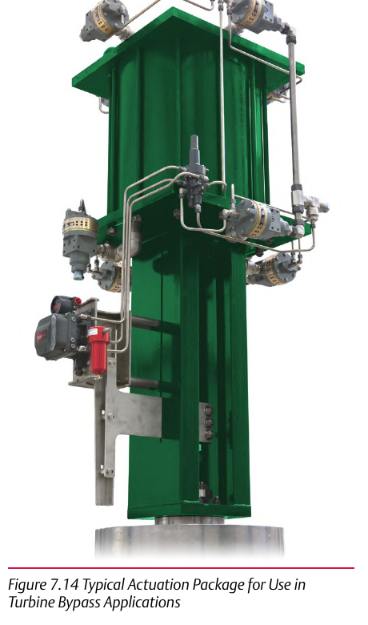

Requirement 1: Class V Shutoff

- 1The first hard requirement the loop must meet
- 2Tight enough that any lesser shutoff class risks steam bypass damage to the turbine
- 3A protection-event requirement, not a nice-to-have
Control Valve Handbook, 6th ed., Fig. 7.14. Component Index: cvh-cmp-turbine-bypass-actuation-package.